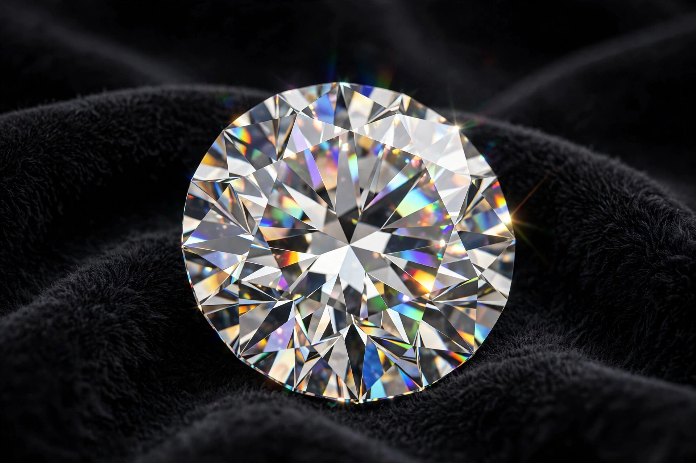

Diamond

| Category | Native element mineral |
|---|---|
| Formula | C (carbon) |
| Crystal system | Cubic (isometric) |
| Mohs hardness | 10 |
| Specific gravity | 3.52 |
| Refractive index | 2.417 |
| Dispersion | 0.044 |
Diamond is a solid form of the element carbon in which the atoms are arranged in a crystal structure called diamond cubic. It is the hardest known naturally occurring material, ranking 10 on the Mohs scale of mineral hardness, and is valued as a gemstone for its exceptional optical properties, including high dispersion ("fire") and refractive index.
Properties
Each carbon atom in a diamond is bonded tetrahedrally to four neighbouring atoms by strong covalent bonds, giving the crystal its extreme hardness and high melting point. Diamond is an excellent thermal conductor — the best of any bulk material — but an electrical insulator unless doped (blue diamonds, containing boron, are semiconductors). Most natural diamonds formed deep in the Earth's mantle, 140 to 190 kilometres down, under pressures above 45 kbar and temperatures of 900–1,300 °C, over billions of years, and were carried to the surface in volcanic pipes of kimberlite and lamproite rock.
Gemstones
Gem-quality diamonds are graded by the "four Cs": carat weight, cut, colour and clarity. Famous diamonds include the Cullinan (3,106 carats rough, the largest gem-quality rough diamond ever found), the Koh-i-Nûr, and the blue Hope Diamond. The majority of the world's diamonds by volume are mined in Russia, Botswana, Canada, Australia and the Democratic Republic of the Congo.
Industrial uses and synthetics
Because of its hardness, most mined diamond is used industrially for cutting, grinding, drilling and polishing. Synthetic diamonds, produced by high-pressure high-temperature (HPHT) and chemical vapour deposition (CVD) methods since the 1950s, now supply the bulk of industrial demand and an increasing share of the gem market.